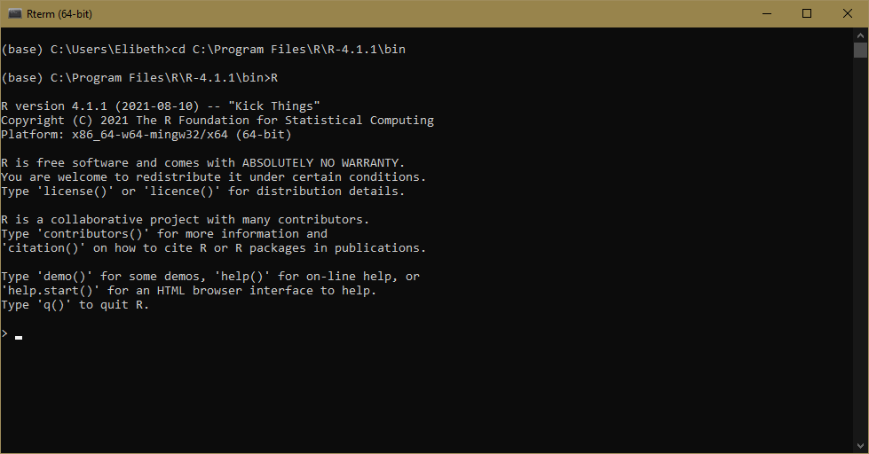
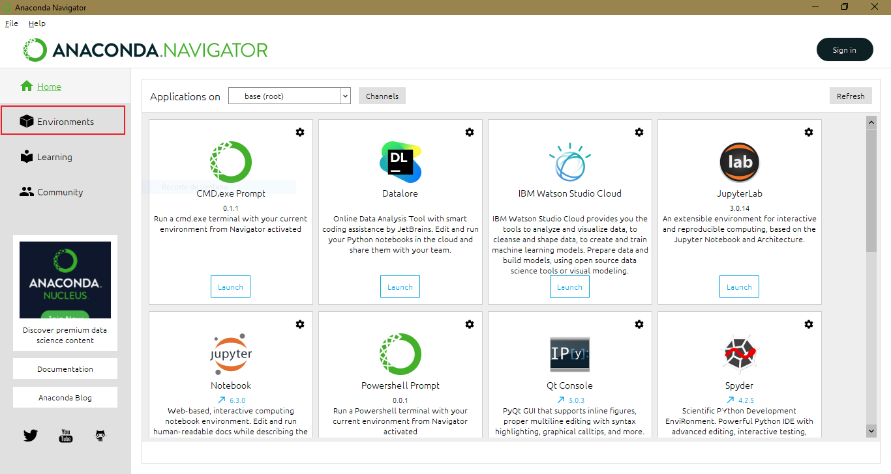
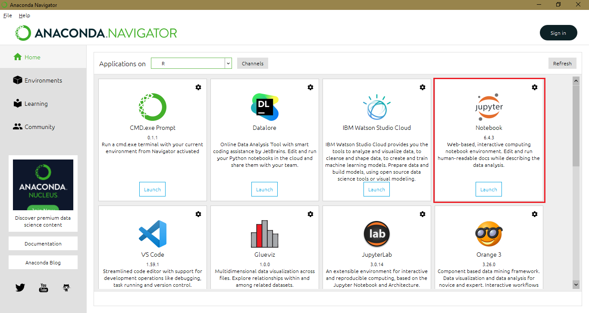

How to install Python and R in Jupyter Notebook?
To make it easier, we have prepared a series of cases for you to identify and proceed with a successful installation. Experience has shown us that the golden rule to run Python and R in Jupyter Notebook is to work with the IRkernel for R.
- Case 1: You have not installed Python, R nor Anaconda before
- Case 2: You have installed Python or Anaconda before (but not R)
- Case 3: You have installed R before (but not Python or Anaconda)
0.1 Case 1: You have not installed Python, R nor Anaconda before
We will install Anaconda first and then set up features to run R in Jupyter.
0.1.1 Installing Anaconda
Follow these steps to install Anaconda correctly: 1. The first step is to download Anaconda from its website.
Once downloaded, double click the installer to launch. Click Next and “I Agree”. After that, select an install for “Just Me” and click Next.
Then, the Anaconda installer will ask for a destination folder to install. We recommend you set it up in the default option provided. It’s important to note that the directory path does not contain spaces or unicode characters.
The next is step is critical. In order to correctly install Anaconda for our purposes, choose NOT to add Anaconda to your PATH environment variable. It is also a recommendation from Anaconda. About the second option, select “Register Anaconda3 as my default Python 3.7”.

Finally, click the Install button, and wait for a bit. After a successful installation, “Thanks for installing Anaconda” will pop up.
After installing, you will see a new program installed on your PC by typing “Anaconda” on Windows.

After installing Anaconda, we will configure the necessary options to be able to run R in a Jupyter Notebook.
0.1.2 R in Jupyter Notebook using IRkernel
This option is the golden rule since you will have the lastest version of R running, which is important for compatibility reasons. In this option, you will install some packages in R to make the kernel available to Jupyter Notebook. It can be accomplished by following these steps:
Important: This option requires R to have been previously installed. We highly recommend you to install from its official web page CRAN. When installing R, use the default options.
Firstly you will need to start R terminal. To do so, search the folder where you install R previously. In this case, we have R in
C:\Program Files\R\R-4.1.1\bin. It will typically be there or in “Usuarios”.
Open the Anaconda prompt. Then type
cd(your directory) such as:
cd C:\Program Files\R\R-4.1.1\bin It will set the directory to use R. So, type R to start. 
After that, we will install packages to use a function that makes the kernel available to Jupyter using IRKernel.
Install the following packages by typing:
install.packages(c('repr', 'IRdisplay', 'IRkernel'), type = 'source')- It will open a CRAN mirror. Choose “USA (OR) (https)”. After installing, type the following to allow the kernel spec can be installed for the current user.
IRkernel::installspec()- Follow step 6 of section 0.1.1 to launch Jupyter Notebook.
0.1.3 What if IRkernel does not work? Create a new environment in Anaconda to run R
It is important to keep in mind that they should use this option as the last one, because Anaconda uses an old version of R. We highly recommend applying the IRkernel steps in the previous section 0.1.2. To create a new environment to run R, follow these steps:
Open Anaconda Navigator.
Once opened, click on “Environments”. 
Click on “Create” to create a new environment.
A new window will pop up. Set Python and R (as shown), and choose a name without spaces to avoid conflicts.

After waiting, you will visualize your new environment. As you can see, we named the new environment “R”.
To launch Jupyter Notebook, go to “Home” section, and select the new environment you’ve just created.
Wait for some minutes until your environment is setting up. Then, look for “Jupyter Notebook” and click on it. 
It will launch Jupyter Notebook on Chrome (or your default browser). Click on “New” and select which program to run.

Write some code on R or Python.
R script
Python script
0.2 Case 2: You have installed Python or Anaconda before (but not R)
Anaconda is an open-source distributor of Python and R. It aims to simplify package management and deployment. The packages are managed by conda system. It means it make your life easier when installing basic packages such as numpy or pandas. Therefore, we recommend using Anaconda as it would be straightforward.
Recommendations:
- If you have Python installed, we highly recommend uninstalling it completely. Even some folders left can cause problems with packages in the future. So make sure you have no folders named “Python” or “Anaconda” after uninstall.
- To uninstall Python or Anaconda correctly, it should be done from the control panel.
0.2.1 You just have Python installed but no Anaconda
If you have Python installed, we encourage you to change it to Anaconda, which also has a friendly navigator called “Anaconda Navigator” to check your packages and environments. To install Anaconda correctly, Python must be removed from your system completely. Here we leave you a guide to do it. After uninstalling Python, follow the steps to install Anaconda as section 0.1.1 explains.
0.2.2 You have Anaconda installed
We encourage you to uninstall Anaconda completely in order to set configurations correctly (check section 0.1.1). To do so, make sure you uninstall Anaconda correctly by following these steps. Even folders left can cause problems with packages in the future. So make sure you have no folders named “Python” or “Anaconda” after uninstall.
If you prefer to keep Anaconda as you installed it in the past, make sure you don’t have Anaconda added to your PATH environment, because you could have problems creating a new environment.
Recommendations:
- Uninstall Anaconda completely in order to set configurations correctly. Even folders left can cause problems with packages in the future. So make sure you have no folders named “Python” or “Anaconda” after uninstall.
- To uninstall Python or Anaconda correctly, it should be done from the control panel.
- Make sure Anaconda IS NOT added to your
PATHenvironment, because you could have problems creating a new environment.
After installing Anaconda following the explained steps, you must install R from CRAN as section 0.1.2 proposes. Just in the case where the kernel doesn’t work, try the section 0.1.3.